OSI Layers 3 & 4 — Network & Transport#
Scope: how packets find their way across many networks using IP addresses, and how processes on two different hosts hold a reliable, ordered conversation using ports.
Source: extracted and reorganised from
md/DOCUMENTATIONS ...md→SYSTEM_DESIGN vs BACKEND→PREVIOUS, OSI LAYERS, API DESIGN, Networking Essentials→OSI layers-(Open System Interconnection).
0. Where these layers sit#
| # | Layer | PDU | Address used | Devices |
|---|---|---|---|---|
| 4 | Transport | Segment (TCP) / Datagram (UDP) | Port number | End hosts only |
| 3 | Network | Packet | IP address | Router, Layer 3 switch, gateway |
The pivotal distinction: Layer 3 is hop-by-hop and lives in every router. Layer 4 is end-to-end and exists only in the two end systems. A router in the middle never opens your TCP segment.
1. Network Layer (Layer 3)#
1.1 Overall#
- Handles logical (IP) addressing of devices.
- Determines optimal routing paths between networks.
- Enables host-to-host communication across multiple networks.
- Takes segments from the Transport layer.
- Adds an IP header containing source and destination IP.
- Wraps them into packets.
1.2 Responsibilities#
- Logical addressing — assigns unique IP addresses to devices, ensuring accurate identification and communication across networks.
- Packetization — encapsulates transport layer segments into packets for efficient transmission.
- Host-to-host delivery — delivers packets from sender to intended receiver across diverse networks.
- Forwarding — moves packets from a router's input interface to the appropriate output interface based on the destination IP.
- Routing — determines the optimal path across multiple networks using routing algorithms and protocols.
- Fragmentation and reassembly — splits large packets into smaller fragments to match the MTU of a network, and reassembles them at the destination.
- Subnetting — divides larger networks into smaller subnetworks for efficient addressing and traffic management.
- NAT (Network Address Translation) — maps private IPs to public IPs for internet communication, conserving address space and adding security.
1.3 MTU — Maximum Transmission Unit#
- The amount of data one packet can carry.
- On Ethernet it is 1500 bytes, that is 1500 × 8 = 12,000 bits.
- A packet larger than the MTU of the next link must be fragmented, which costs processing time and risks total loss if any fragment is dropped.
- Path MTU Discovery is how modern stacks avoid fragmentation: they probe for the smallest MTU on the path and size packets to fit.
1.4 IPv4 header at a glance#
0 1 2 3
|Version| IHL |Type of Service| Total Length |
| Identification |Flags| Fragment Offset |
| Time to Live | Protocol | Header Checksum |
| Source IP Address |
| Destination IP Address |
| Options (optional) |- Version — 4 or 6.
- TTL — decremented at each hop; at zero the packet is dropped. Prevents infinite routing loops and is what
tracerouteexploits. - Protocol — what is inside: 6 = TCP, 17 = UDP, 1 = ICMP.
- Identification / Flags / Fragment Offset — used to reassemble fragments.
- Minimum header size is 20 bytes without options.
Why 8 bits per byte?#
2⁸ = 256 possible values, enough to represent characters, numbers, and symbols. This is why an IPv4 address, made of four 8-bit octets, has each part in the range 0–255.
1.5 Reference diagrams#
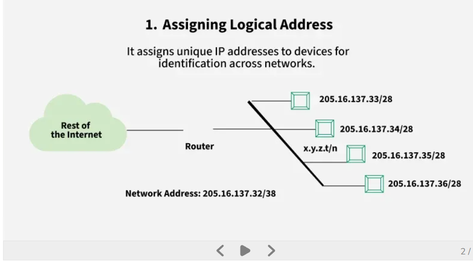
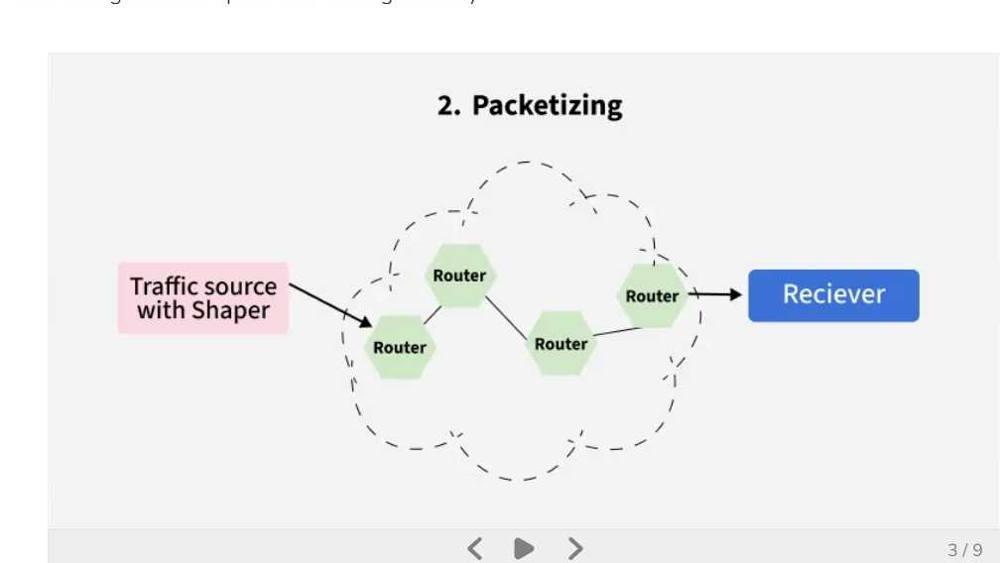
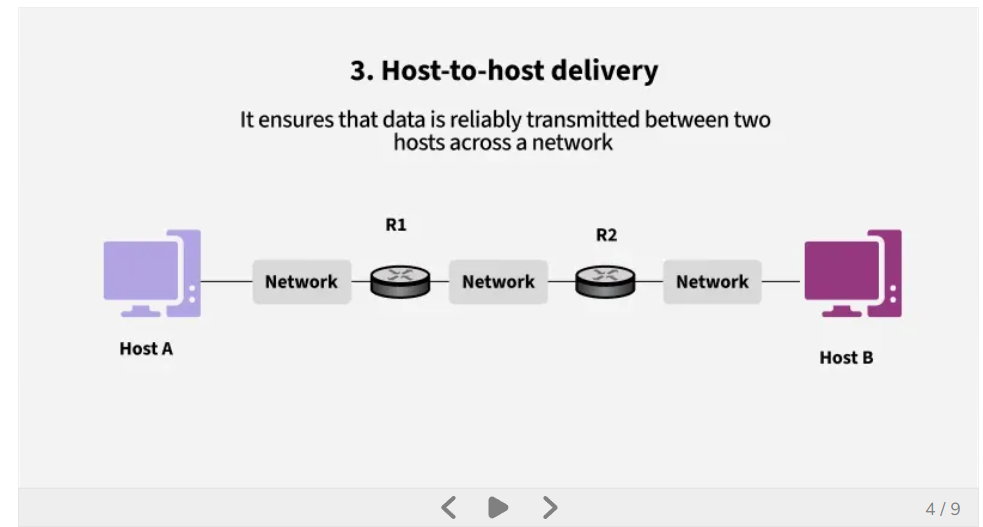
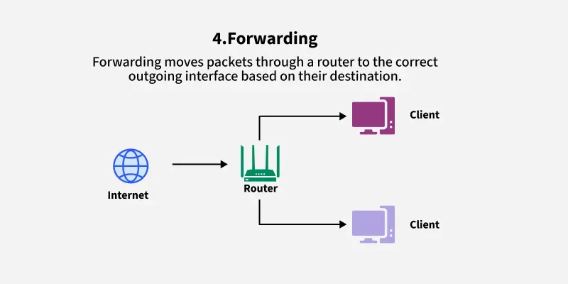
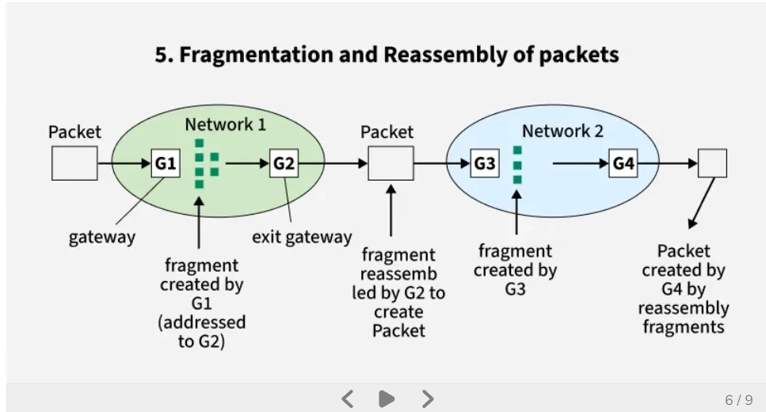
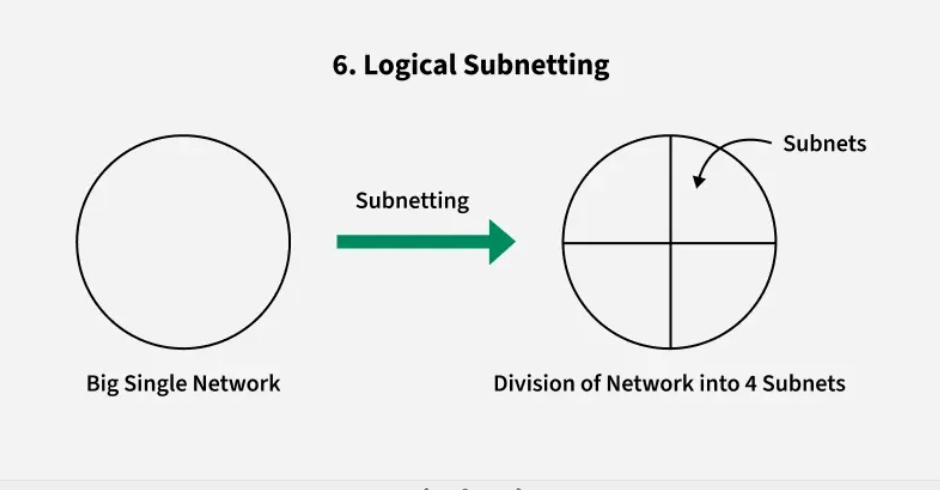
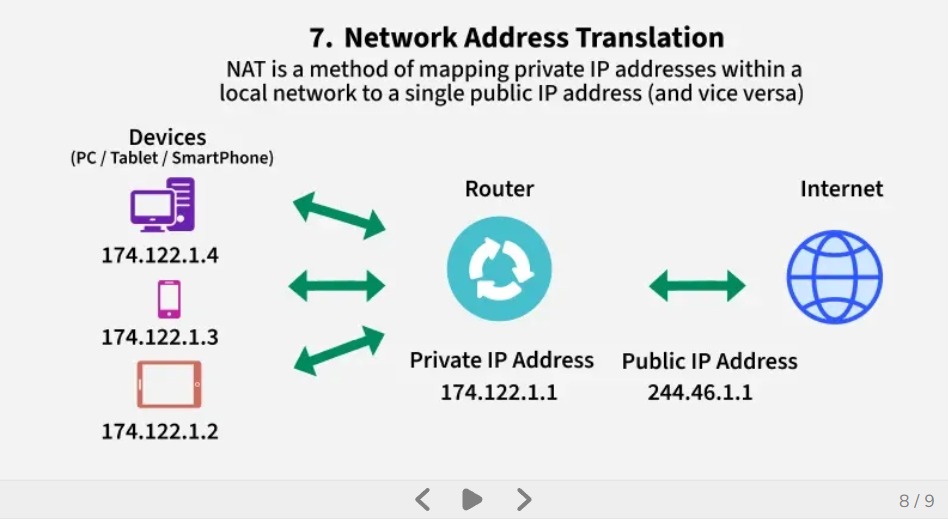
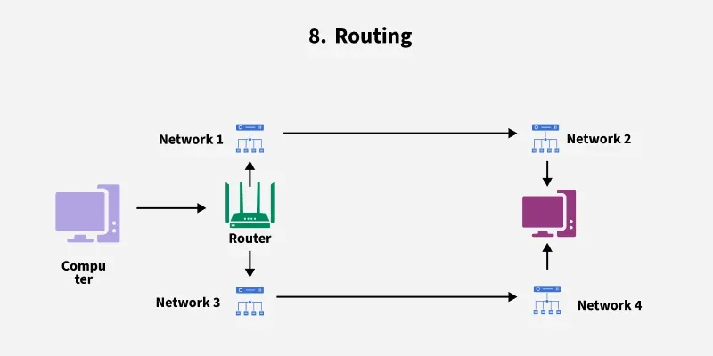
1.6 Devices#
Network layer = routing between different networks using IP addresses.
- Router — the most important one. Connects distinct networks and forwards packets based on its routing table.
- Layer 3 switch (multilayer switch) — switches at wire speed but can also route between VLANs.
- Gateway — a concept device. Your default gateway is the exit point of your network, used whenever the destination is not in your local subnet.
1.7 Protocols#
- IP (Internet Protocol, IPv4 / IPv6) — the addressing and delivery protocol itself.
- ICMP (Internet Control Message Protocol) — sends error reports and diagnostic messages, for example destination unreachable, and ping.
- ARP (Address Resolution Protocol) — maps IP addresses to MAC addresses within a local network. Sits at the L2/L3 boundary.
- RARP (Reverse Address Resolution Protocol) — retrieves a device's IP address using its MAC address. Largely obsolete, replaced by DHCP.
- NAT (Network Address Translation) — converts private IP addresses to public IPs, conserving addresses and improving security.
- IPSec (Internet Protocol Security) — secures IP communication through encryption and authentication.
- MPLS (Multiprotocol Label Switching) — uses labels to forward packets efficiently and manage traffic.
1.8 Routing tables and how they spread#
Each router stores, per entry:
- destination network
- next hop
- hop count (metric)
With a distance-vector protocol such as RIP, every 30 seconds each router sends its entire routing table to its neighbours. Link-state protocols such as OSPF instead flood topology changes and each router computes shortest paths itself.
Routing protocols#
- RIP (Routing Information Protocol) — distance-vector protocol using hop count to select routes.
- OSPF (Open Shortest Path First) — link-state protocol that computes the shortest path from network topology.
- BGP (Border Gateway Protocol) — path-vector protocol that routes data between autonomous systems on the internet. This is the protocol that holds the public internet together.
1.9 Your laptop has a routing table too#
Yes, your laptop does have a routing table. It is a small set of rules telling it where to send network traffic.
Destination Next Hop
192.168.1.0/24 Direct (LAN)
0.0.0.0/0 192.168.1.1 (router)- Local network traffic — if the destination is inside your WiFi or LAN, send it directly, no router needed.
- Internet traffic — if the destination is outside, send it to the default gateway, that is your router.
0.0.0.0/0is the catch-all default route.
Inspect it yourself:
netstat -rn # macOS / BSD
ip route show # Linux
route print # Windows1.10 Do all network devices work at once?#
No. Network devices do not all act at once. They are used based on destination and network boundaries.
Case 1 — destination is in the SAME LAN#
PC A → PC B on the same WiFi.
- Uses a switch (Layer 2).
- Uses the MAC address.
- No router involved.
PC A → Switch → PC BCase 2 — destination is OUTSIDE the LAN#
PC → google.com.
- Uses the router (gateway).
- Uses the IP address.
- The switch is still used inside the LAN, but the router is needed next.
PC → Switch → Router (Gateway) → InternetCase 3 — what is a gateway?#
The gateway is your default router, the exit point of your network, used when the destination is not in the local subnet.
1.11 What the Network layer does and does not do#
Does:
- Logical addressing — uses IP to identify source and destination host.
- Routing — chooses the next router only, using the routing table.
- Packet forwarding — sends the packet hop by hop from router to router.
- TTL — prevents infinite loops, decreasing at each hop.
- Fragmentation — splits packets when the MTU is too small.
Does NOT:
- No retransmission.
- No reliability guarantee.
- No ordering of packets.
- No connection management.
Those four omissions are exactly the job description of Layer 4.
1.12 Advantages and limitations#
Advantages
- Enables end-to-end communication across multiple networks.
- Supports scalability through subnetting and hierarchical addressing.
- Efficiently routes packets using shortest-path and dynamic routing algorithms.
- Provides internetworking by connecting heterogeneous networks.
Limitations
- No flow control mechanism; congestion may occur if too many datagrams are in transit.
- Limited error control; mainly relies on upper layers for reliability.
- Routers may drop packets under heavy load, leading to possible data loss.
- Fragmentation increases processing overhead and may affect performance.
2. Transport Layer (Layer 4)#
2.1 Definition#
The Transport Layer is the OSI Layer 4 responsible for providing reliable, efficient, and ordered end-to-end communication between applications on different hosts.
2.2 Overall and responsibilities#
- Operates at Layer 4 of the OSI model.
- Enables process-to-process communication using port numbers.
- Ensures reliability through error control, sequencing, and retransmission.
- Supports flow control to prevent receiver overload.
- Uses protocols like TCP, UDP, and SCTP for different application needs.
2.3 Usage#
- Implemented only in end systems, not in intermediate routers.
- Uses port numbers to identify sending and receiving applications.
- Supports process-to-process delivery, so multiple applications share a single network connection.
- Performs multiplexing and demultiplexing using port numbers to direct data to the correct process.
- Divides data from upper layers into segments (TCP) or datagrams (UDP) and adds the necessary headers.
- Handles error detection, retransmission, and sequencing to maintain reliability.
- Coordinates flow control so the receiver is not overloaded.
- Communicates with the Network layer, which handles addressing and routing.
- At the receiving end it removes headers and reassembles data for the application.
2.4 Multiplexing and demultiplexing#
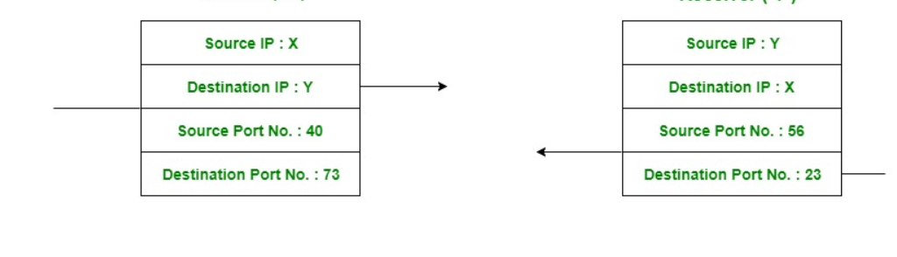
The 4-tuple#
A connection is uniquely identified by four values:
(source IP, source port, destination IP, destination port)Demultiplexing#
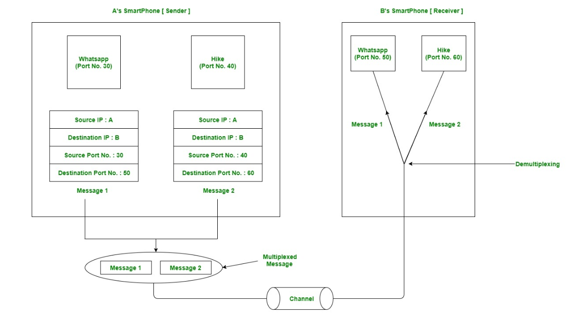
Demultiplexing is the process of distributing arriving segments to the correct sockets based on that tuple.
Multiplexing#
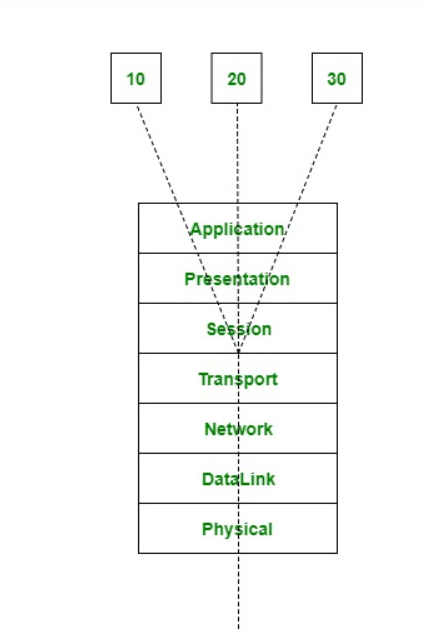
Multiplexing is gathering data from multiple application processes of the sender, enveloping that data with a header, and sending them as a whole to the intended receiver.
What is a socket?#
Socket = door + receptionist + mailbox
- Door — the entry and exit point.
- Receptionist — decides where data goes, that is demultiplexing.
- Mailbox — buffers data.
More formally: a socket is an OS endpoint for network communication, holding buffers, connection state, and IP/port metadata. It is a smart endpoint, not a simple pipe.
Source vs destination#
| Field | Meaning |
|---|---|
| Source port | Port number of the sender's application |
| Destination port | Port number of the receiving service on the server |
| Source IP | IP address of the device sending the data |
| Destination IP | IP address of the device receiving the data |
2.5 TCP header#
The minimum TCP header is 20 bytes without options. A UDP header is 8 bytes. That difference is the price of reliability.
| Source Port | Destination Port |
| Sequence Number |
| Acknowledgment Number |
| Offset|Reserved| Flags | Window Size |
| Checksum | Urgent Pointer |
| Options (0-40 bytes) |Flags include SYN, ACK, FIN, RST, PSH, and URG.
2.6 TCP 3-Way Handshake#
The 3-Way Handshake ensures both client and server are ready before data transmission begins.
Step 1 — SYN (Client → Server)
- Client sends a TCP segment with
SYN=1, including its ISN (Initial Sequence Number). - Marks the request to initiate a connection.
Step 2 — SYN-ACK (Server → Client)
- Server replies with
SYN=1andACK=1, containing its own ISN andACK = client_ISN + 1. - Confirms receipt of the client's SYN and initiates its own synchronisation.
Step 3 — ACK (Client → Server)
- Client sends
ACK=1withACK = server_ISN + 1. - Completes synchronisation; the connection enters the ESTABLISHED state.
Client Server
|------------ SYN, seq=x ------------->|
|<---- SYN-ACK, seq=y, ack=x+1 --------|
|------------ ACK, ack=y+1 ----------->|
| ESTABLISHED |On the ISN#
The ISN is not for packets. It is the starting sequence number for the TCP byte stream, and packets carry ranges of those byte numbers. A new connection knows where the stream starts because the ISN is exchanged in the handshake before any data flows.
2.7 Connection termination — the 4-way close#
- FIN — the client sends a FIN (finish) packet to the server to terminate the connection.
- ACK — the server acknowledges the FIN with an ACK.
- FIN — the server sends its own FIN to terminate its side.
- ACK — the client acknowledges the server's FIN.
Two independent directions are closed separately, which is exactly what "full duplex" implies.
2.8 Protocols#
1. TCP — Transmission Control Protocol#
- Connection-oriented.
- Reliable.
- Because it is connection-oriented, the connection is established between the two ends first, then data is transferred, then the connection is terminated after all data has been sent.
- Provides ordering, retransmission, flow control, and congestion control.
2. UDP — User Datagram Protocol#
- Not reliable.
- Connectionless.
- Used when speed and size matter more than security and dependability.
- Supplements higher-layer data with transport-level addresses, checksum error control, and length information.
- The packet UDP generates is called a user datagram.
3. SCTP — Stream Control Transmission Protocol#
A transport-layer protocol like TCP and UDP, but more advanced and specialised.
In SCTP, one connection can carry multiple independent streams at the same time:
Connection → Stream 1 (data A)
→ Stream 2 (data B)
→ Stream 3 (data C)Where it is used:
- Telecom — 4G/LTE/5G core networks, SS7 signalling replacement.
- Financial systems — high-reliability trading systems.
- Industrial and control systems — systems needing failover and redundancy.
Comparison#
| Protocol | Type | Key idea |
|---|---|---|
| TCP | Byte stream | Reliable, single stream |
| UDP | Datagram | Fast, no guarantee |
| SCTP | Message-based | Multi-stream and multi-path |
2.9 QUIC#
Key idea#
QUIC = one connection with many streams.
Details#
QUIC (Quick UDP Internet Connections) is a modern transport protocol built on top of UDP, designed to replace TCP + TLS for web communication.
Simple framing: QUIC is TCP + TLS + HTTP/2 features, but built over UDP.
Why QUIC was created#
TCP has problems:
- Slow handshake, because TCP and TLS are two separate handshakes.
- Head-of-line blocking.
- Hard to improve, because it is a kernel-level protocol.
QUIC fixes these at the user space level, so it can be updated by shipping a new browser or library rather than a new operating system.
Key features#
- Faster connection setup — combines transport and encryption handshake, usually 1-RTT or even 0-RTT.
- Built-in encryption — TLS 1.3 is integrated; every QUIC connection is encrypted by default.
- No head-of-line blocking — multiple independent streams; if one stream loses a packet, the others continue.
- Runs on UDP — UDP gives flexibility, and QUIC handles reliability itself.
- Connection migration — you can change network, WiFi to mobile data, without dropping the connection.
TCP vs QUIC#
| Feature | TCP | QUIC |
|---|---|---|
| Base | TCP | UDP |
| Encryption | Separate (TLS) | Built in |
| Streams | Single stream | Multiple streams |
| Head-of-line blocking | Yes | No |
| Connection speed | Slower | Faster |
Where QUIC is used#
- HTTP/3 runs on QUIC.
- YouTube, Google Search.
- Chrome and Chromium browsers.
- Cloud services from Google and Cloudflare.
A stream is a logical sequence of data that can be sent and received independently within one connection.
2.10 Reference diagrams#
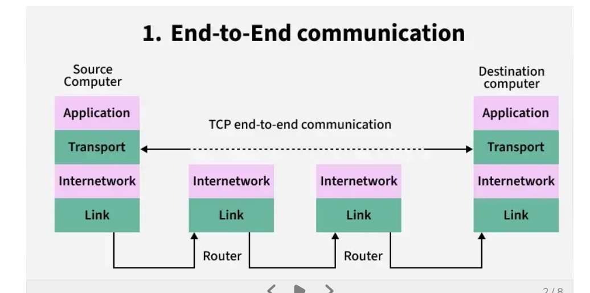
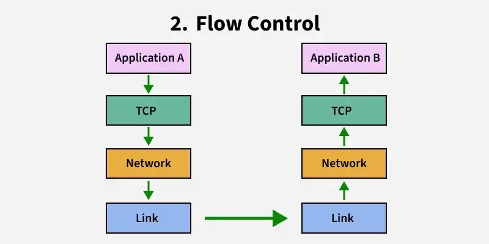
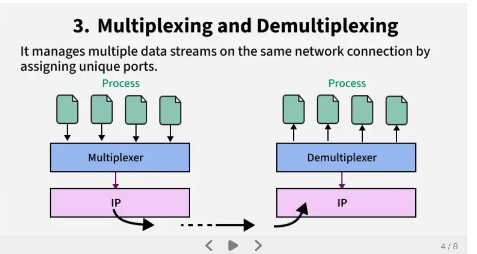
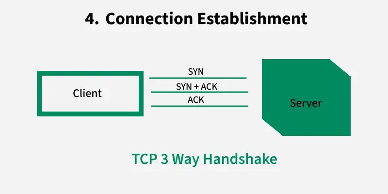
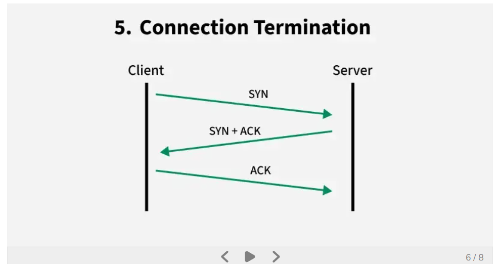
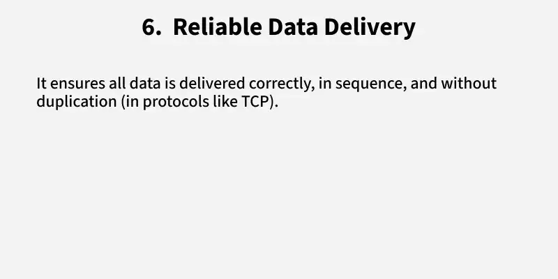
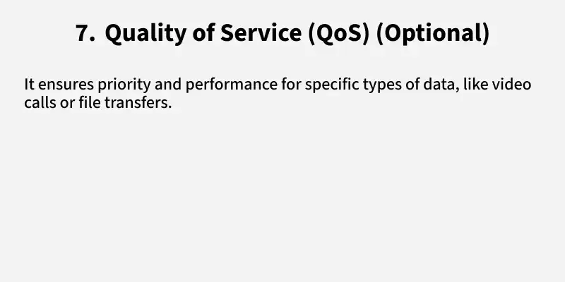
3. Q&A — Layers 3 & 4#
Network layer#
Will the Network layer convert segments into packets? Yes. It takes segments from the Transport layer, adds an IP header with source and destination IP, and wraps them into packets.
How will the Network layer choose the next router, based on what? The router device holds a routing table, and the next hop is selected from it by matching the destination IP against the most specific prefix.
So will there be a router in my laptop too? Yes. Your laptop has a routing table, a small set of rules that tells it where to send network traffic. Local subnet traffic goes direct; everything else goes to the default gateway.
Do all network devices work together at once? No. They are used based on destination and network boundaries. Same LAN uses only the switch; outside the LAN adds the router.
Why 8 bits? 2⁸ = 256 possible values, enough to represent characters, numbers, and symbols.
What is the MTU? The amount of data one packet can carry, 1500 bytes on Ethernet.
What does the Network layer NOT do? No retransmission, no reliability guarantee, no ordering, no connection management.
Transport layer#
What is the size of the TCP header without options? Minimum TCP header is 20 bytes. A UDP header is 8 bytes.
Is one TCP request one process? No. One process can handle many TCP connections.
Does TCP use multiplexing and demultiplexing? Yes, to combine multiple application data streams and route them correctly.
Can TCP handle only one instance at a time? No. TCP handles many simultaneous connections.
How does the Transport layer know which socket gets the data? It uses the 4-tuple: source IP, source port, destination IP, destination port.
Do segments store socket IDs? No. They store IP and port information, not socket IDs.
What are the sequence number and ACK number for? They ensure ordering and reliability, not routing.
What is a socket? An OS endpoint for network communication.
What does a socket contain? Buffers, connection state, and IP/port metadata.
Is a socket like a tube into an application? Not exactly. It is a smart endpoint, not a simple pipe.
Do TCP segments store the 4-tuple? Not directly. The IP header and the TCP header together form the 4-tuple.
How does demultiplexing work when the ports are the same? Source IP and source port differences make each connection unique.
What if the same device sends multiple requests? The OS assigns different source ports, or reuses one connection.
What if everything is identical, IP, ports, and sequence? That is impossible. TCP and the OS prevent duplicate connections.
How does a server know which is the first segment in sequence on a new connection? Through the 3-way handshake, where the ISN is established before any data is exchanged, marking the start of the byte stream.
Application vs process? An application is a program stored on disk. When executed in memory it becomes a process managed by the OS, and it may spawn multiple processes or threads while running.
4. Quick revision sheet#
| Question | Layer 3 | Layer 4 |
|---|---|---|
| Unit | Packet | Segment / datagram |
| Address | IP | Port |
| Scope | Hop by hop, host to host | End to end, process to process |
| Where it runs | Every router and host | End hosts only |
| Reliability | None | TCP yes, UDP no |
| Ordering | None | TCP yes |
| Key protocols | IP, ICMP, NAT, IPSec, MPLS | TCP, UDP, SCTP, QUIC |
| Routing protocols | RIP, OSPF, BGP | n/a |
| Devices | Router, L3 switch, gateway | none |
One sentence each
- Layer 3 gets a packet from any network to any other network, choosing one next hop at a time, and promises nothing about arrival.
- Layer 4 turns that unreliable hop-by-hop delivery into a conversation between two processes, adding ports, ordering, and retransmission.
Previous: OSI Layers 1 & 2 — Physical & Data Link
Next: OSI Layers 5, 6 & 7 — Session, Presentation & Application